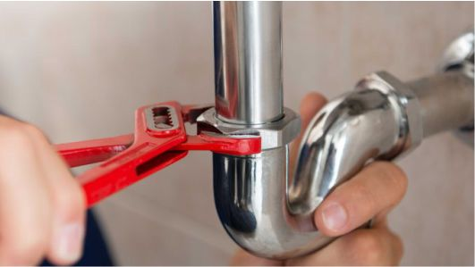

Plumbing

Leaky pipes and faucets can waste a lot of water-and money-if left alone.
Santos is pleased to offer plumbing services for your home, including
faucet repair, toilet replacement, pipe insulation and more.
Refresh your kitchen with a brand new kitchen sink. Once you decide on
what type of sink you’d like to install, your local Santos professional will
help remove the old sink and properly install the new sink – all in a day’s work!
According to the EPA, leaky pipes and fixtures can waste more than 10,000 gallons
of water every year. Our handymen have the skills and expertise to repair or replace
troublesome pipes, toilets and fixtures—before they wreak havoc on your water bill.
Santos is the one-call solution that you can trust.